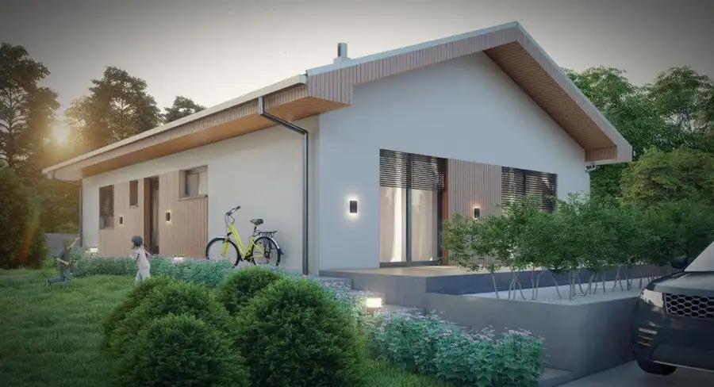
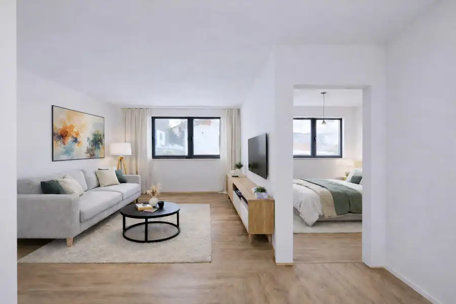
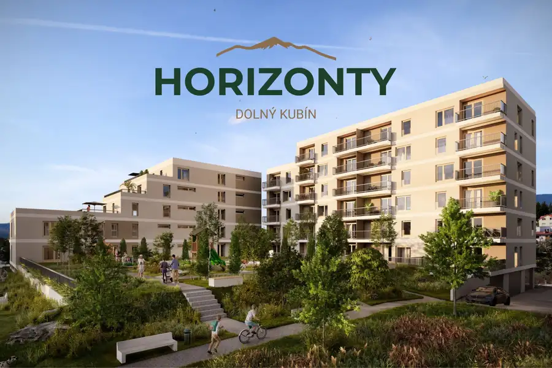

TARGETreal | stavebné pozemky pre rodinné domy v Bitarovej pri Žiline
Bitarová
- Plocha489 m²
- VlastníctvoOsobné
O nehnuteľnosti
Ponúkame na predaj 4 slnečné stavebné pozemky určené na výstavbu rodinných domov v obľúbenej obci Bitarová, len pár minút od Žiliny.Pozemky sa nachádzajú v príjemnom a pokojnom prostredí, pričom sú situované vo veľmi miernom svahu, ktorý ponúka ideálne podmienky pre komfortné bývanie. Vďaka orientácii a dostatku slnečného svetla sú vhodné pre tých, ktorí hľadajú spojenie pokojného bývania v blízkosti prírody a zároveň výbornej dostupnosti do mesta.K dispozícii sú:- Pozemok A: 489 m² + podiel na prístupovej ceste- Pozemok B: 489 m² + podiel na prístupovej ceste- Pozemok C: 464 m² + podiel na prístupovej ceste- Pozemok D: 464 m² + podiel na prístupovej cesteKu každému pozemku prináleží podiel na súkromnej ceste, ktorá zabezpečuje prístup k jednotlivým parcelám.INŽINIERSKE SIETE A VYBAVENOSŤNa pozemkoch sú už osadené prípojkové skrine elektriny, čo predstavuje výhodu pri budúcej výstavbe.Vzhľadom na lokalitu je potrebné počítať s riešením vlastnej studne a žumpy.LOKALITA – BITAROVÁBitarová patrí medzi vyhľadávané obce v blízkosti Žiliny. Ponúka pokojné prostredie pre rodinné bývanie, pričom zároveň poskytuje výbornú dostupnosť do Žiliny.V obci sa nachádza kompletná občianska vybavenosť potrebná pre každodenný život. Výhodou je aj blízkosť mesta, kde máte k dispozícii širokú ponuku obchodov, služieb, škôl, zdravotnej starostlivosti, reštaurácií a mnoho ďalšieho.HLAVNÉ VÝHODY- 4 pozemky vhodné na výstavbu rodinných domov- výmery: 464 – 489 m²- podiel na prístupovej ceste ku každému pozemku- elektrina – osadené prípojkové skrine- slnečné pozemky- veľmi mierny svah- pokojná lokalita vhodná na rodinné bývanie- kompletná občianska vybavenosť v obci- výborná dostupnosť do ŽilinyAk hľadáte pozemok pre vlastný rodinný dom v pokojnej lokalite, no nechcete sa vzdať pohodlnej dostupnosti do Žiliny, Bitarová je veľmi zaujímavou voľbou.Pre viac informácií o jednotlivých pozemkoch a termínu osobnej obhliadky ma neváhajte kontaktovať.Jakub RybanskýTel.: 0902 537 222Email: jakub.rybansky@targetreal.sk
Parametre
| Druh | Pozemok pre rodinné domy |
|---|---|
| Dátum zverejnenia | 7. 10. 2026 |
| Elektrina | Na pozemku - 230 V |
| Odpadové vody | Na pozemku - Žumpa |
| Plocha pozemku | 489 m² |
| Terén pozemku | Mierne svahovitý |
| Typ | Predaj |
| Vlastníctvo | Osobné |
| Voda | Na pozemku - Studňa |
Kde to je


Mohlo by Vás zaujímať

DomNové7 239 900 €TARGETreal | Rodinný dom v hrubej stavbe na predaj – Brezany pri Žiline Bitarová 103 m² Ponúkame na predaj priestranný rodinný dom v štádiu hrubej stavby, ktorý sa nachádza v malebnej obci Brezany, len 7 km od centra Žiliny. Lokalita…
BytNové10 139 900 €TARGETreal | 2-izbový byt - Lipový háj – bývanie v lone prírody Novoť 2-izbový62 m²1. podlažie Ponúkame Vám priestranný 2-izbový byt o výmere 72,83 m² v prémiovom bytovom projekte Lipový háj v obci Novoť. K bytu prislúcha aj pivničná kobka o…
BytNové10 297 250 €TARGETreal | Horizonty DK 4-izbové byty, Spúšťame predaj! Dolný Kubín 4-izbový89 m²1. podlažie horizontydk.skPonúkame na predaj 4-izbové byty v novom developerskom projekte Horizonty Dolný Kubín, ktorý je aktuálne vo výstavbe.Byty majú výmery…